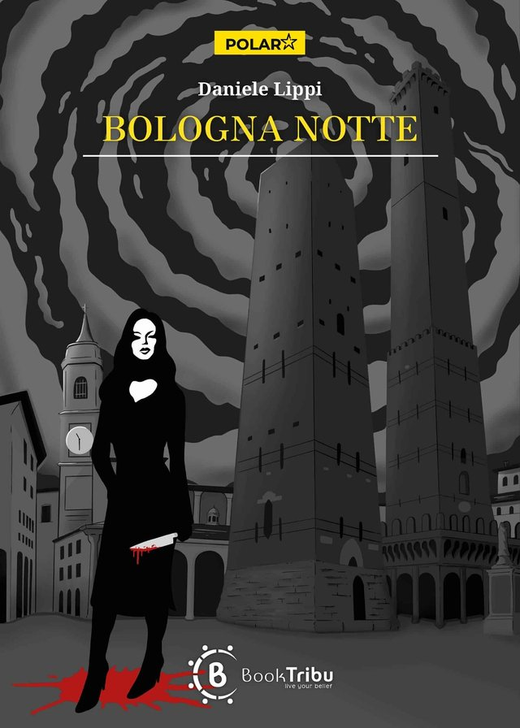

Trilogia dell’ispettore Lando · Volume 1
Bologna notte
Premio POLAR poliziesco-noir BookTribu 2024
Trasferito da Roma a Bologna dopo un’indagine sgradita a molti e una storia d’amore finita male, l’ispettore Lando dovrà, suo malgrado, fare da esca per una serial killer che decapita le sue vittime e si porta via le teste come trofei. Dopo una serie di colpi di scena si troverà la colpevole, ma l’indagine finirà per intrecciarsi con gli intrighi della politica locale e le incombenti elezioni amministrative. Il nuovo sindaco, eletto con una lista civica per portare ordine e pulizia in città, attuerà un programma di Tolleranza Zero che avrà conseguenze drammatiche e un imprevedibile finale.
Romanzo in italiano